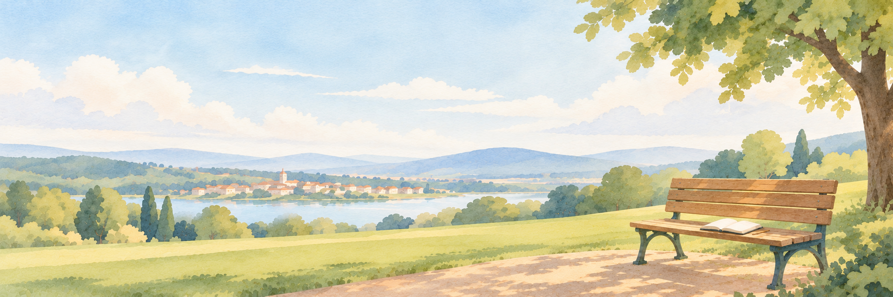

改めていま、幽体離脱をひもとく ／ DESIGN STUDIES
同じ思いを、
3つの入口から。
体験の魅力を伝え、離脱と明晰夢の実践につなげる。サイトをつくった思いはそのままに、読み始めの印象と、読む順序を変えたトップページです。
A / EDITORIAL
改めていま、
幽体離脱を
ひもとく
幽体離脱を
ひもとく
夢の旅誌
余白のある読み物の表紙。景色と文章を並べ、体験への関心から、作者の思いへ。
この案を開く →B / IMMERSIVE

改めていま、幽体離脱をひもとく
夢への入口
景色から始まる大きな入口。短い誘いと体験のイメージから、実践の選択へ。
この案を開く →C / PERSONAL
楽しんできたこの体験を、もっと多くの人に届けたくて。
実践者の手帖
作者からの手紙のように。15年以上の経験と海外の実践に出会った発見を軸に。
この案を開く →各案の上部から切り替えられます。記事へのリンクは現在の公開サイトに移動します。ここはデザイン比較用のページです。現在のトップページは変更していません。